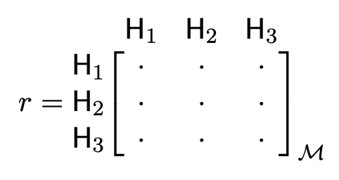
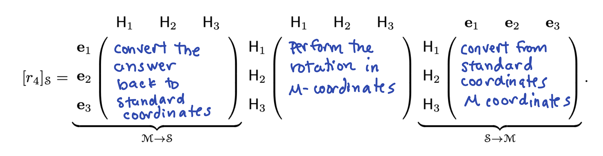

Section 6 Problem Set 6
- Due: Wednesday October 27 by 11:59pm CST. This is the Wednesday after Fall break. However, these problems cover topics that are on Exam 2. I will have you work on and discuss them before the exam. I hope that you can get it all done before break, but to take the pressure off writing it up, I will not have you turn it in until after break. There will be time in class to discuss and work on these.
- Upload your solutions to Moodle in a PDF.
- Please feel free to use RStudio for all row reductions.
- You can download the Rmd source file for this problem set.
6.1 Dimension
Find the dimension of the subspace \(Z\) of \(\mathbb{R}^5\) of vectors below. Either use the method of “baking in†the conditions or turn it in to a null space and use our methods of finding a null space basis. \[ Z = \left\{ \begin{bmatrix}x_1 \\ x_2 \\ x_3 \\ x_4 \\ x_5 \end{bmatrix} \ \Bigg\vert\ \ x_1 + x_2 + x_3 + x_4 + x_5 = 0, x_4 = 2 x_2 \ \right\}. \]
6.2 A Tetrahedral Basis
In practice, we change bases because problems are computationally easier in another coordinate system or because we learn something by looking at a problem from the point of view of a different coordinate system. The following example illustrates this with ideas that arises both in chemistry and computer graphics. Below is the tetrahedral molecule methane, \(\mathsf{CH}_4\). Its coordinates can be described in 3-dimensional space by the vectors below.
\[ \mathsf{C}=\begin{bmatrix} 0 \\ 0 \\ 0 \end{bmatrix}, \mathsf{H}_1=\begin{bmatrix} 0 \\ 0 \\ \frac{3}{2\sqrt{6}} \end{bmatrix}, \mathsf{H}_2=\begin{bmatrix} -\frac{1}{2 \sqrt{3}} \\ -\frac{1}{2} \\ -\frac{1}{2 \sqrt{6}} \end{bmatrix}, \mathsf{H}_3=\begin{bmatrix} -\frac{1}{2 \sqrt{3}} \\ \frac{1}{2} \\ -\frac{1}{2 \sqrt{6}} \end{bmatrix}, \mathsf{H}_4=\begin{bmatrix} \frac{1}{\sqrt{3}} \\0 \\-\frac{1}{2 \sqrt{6}} \end{bmatrix} \]

Find a dependence relation among the vectors \(\mathsf{H}_1, \mathsf{H}_2, \mathsf{H_3}, \mathsf{H_4}.\) Hint: add them together (you can do it “by hand†by just looking at the sum).
We can see visually that the set \(\mathcal{M} = \{ \mathsf{H}_1, \mathsf{H}_2, \mathsf{H_3} \}\) is a basis of \(\mathbb{R}^3\), which we will call the tetrahedral basis. You can see from the plot that these vectors are linearly independent (not all on the same plane). Give the coordinates of each of the vectors \(\mathsf{H}_1, \mathsf{H}_2,\mathsf{H}_3,\mathsf{H}_4\) in the \(\mathcal{M}\) basis (for \(\mathsf{H}_4\) you will need to use part a).
In chemistry and physics, we are interested in symmetry operations. These are linear transformations such that the atom looks the same after the transformation as it did before. For example one such operation is rotation \(r\) by 120\(^o\) around the \(\mathsf{H}_4\) axis. This rotation sends \(\mathsf{H}_1\) to \(\mathsf{H}_3\), \(\mathsf{H}_3\) to \(\mathsf{H}_2\), and \(\mathsf{H}_2\) to \(\mathsf{H}_1\). Give the matrix of \(r\) in the \(\mathcal{M}\) basis. The columns should be the result of applying the symmetry operation to each of the basis vectors and then expressing the answer in the \(\mathcal{M}\) basis.

Show, by multiplying by hand, that your matrix \(r\) sends \(\mathsf{H}_1\) to \(\mathsf{H}_3\), \(\mathsf{H}_3\) to \(\mathsf{H}_2\), \(\mathsf{H}_2\) to \(\mathsf{H}_1\), and \(\mathsf{H}_4\) to \(\mathsf{H}_4\).
Another symmetry operation is a rotation \(s\) by \(180^o\) around the axis that passes through the midpoing between \(\mathsf{H}_1\) and \(\mathsf{H}_2\) and the midpoint between \(\mathsf{H}_3\) and \(\mathsf{H}_4\). This rotation exchanges \(\mathsf{H}_1\) and \(\mathsf{H}_2\) and exchanges \(\mathsf{H}_3\) and \(\mathsf{H}_4\). Find the matrix of \(s\) in the \(\mathcal{M}\) basis. By hand, apply it to each of the four hydrogen atoms and show that they go to the right place.
Now we will convert our matrix for \(r\) to standard coordinates. Here is the recipe. First, enter the change of basis give the change of basis matrix \(T\) that converts from the tetrahedral basis \(\mathcal{M}\) to the standard basis \(\mathcal{S}\) and compute its inverse that converts from the standard basis back to \(\mathcal{M}\). Here are the atoms for you.
H1 = c(0,0,3/(2*sqrt(6)))
H2 = c(-1/(2*sqrt(3)),-1/2,-1/(2*sqrt(6)))
H3 = c(-1/(2*sqrt(3)),1/2,-1/(2*sqrt(6)))
H4 = c(1/sqrt(3),0,-1/(2*sqrt(6)))- Now, enter the matrix of the rotation \(r\) from part c above. It is entered as the all 0s matrix right now. You need to enter your correct entries.
r.M = cbind(c(0,0,0),c(0,0,0),c(0,0,0))
rownames(r.M) <- c("H1","H2","H3")
colnames(r.M) <- c("H1","H2","H3")
r.M## H1 H2 H3
## H1 0 0 0
## H2 0 0 0
## H3 0 0 0- Compute the matrix of \([r]_\mathcal{S}\) in the standard basis by computing the matrix product below. Notice that, working from right to left, it first converts from standard coordinates to \(\mathcal{M}\) coordinates. Then it does the rotation in \(\mathcal{M}\) coordinates. Then it converts the answer back to standard coordinates.

- Multiply this matrix (using R) by each of the hydrogen atoms (but now in standard coordinates) and see that they go to the right place. The point of this exercise is that the problem is much easier and nicer in the \(\mathcal{M}\) basis, which is well-suited to the problem.
6.3 Matrix Rank
In the table below, each column corresponds to a linear transformation \(T_\mathsf{M}: \mathbb{R}^n \to \mathbb{R}^m\) with a matrix \(\mathsf{M}\). At the top of the column I tell you the values of \(m\) and \(n\) and the rank of the matrix.
Fill in the entries of the table with T = true or F = false or I = not enough information to know. (Hint: draw a “picture†of the RREF of \(\mathsf{A}\) in each case).
(a) \(\mathsf{A}\) is invertible
(b) \(\mathsf{rref}(\mathsf{A}) = I\)
(c) \(\mathsf{A}\) has 8 pivots
(d) \(\mathsf{A} \mathbf{0} = \mathbf{0}\)
(e) \(\mathsf{A} \mathsf{x} = \mathbf{0}\) has more than one solution.
(f) \(T\) is one-to-one
(g) \(T\) is onto
(h) \(\mathsf{A} \mathsf{x} = \mathsf{b}\) has at least one solution for all \(\mathsf{b} \in \mathbb{R}^8\).
(i) The columns of \(\mathsf{A}\) span \(\mathbb{R}^8\).
(j) There is a vector \(\mathsf{b} \in \mathbb{R}^8\) such that \(\mathsf{A} \mathsf{x} = \mathsf{b}\) has no solutions.
(k) There is a vector \(\mathsf{b} \in \mathbb{R}^8\) such that \(\mathsf{A} \mathsf{x} = \mathsf{b}\) has infinitely many solutions.
(l) There is a vector \(\mathsf{b} \in \mathbb{R}^8\) such that \(\mathsf{A} \mathsf{x} = \mathsf{b}\) has exactly 17 solutions.
(m) There is a vector \(b \in \mathbb{R}^8\) that can be written as a linear combination of the columns of \(\mathsf{A}\) in more than one way.
(n) The rows of \(\mathsf{A}\) span a 7 dimensional subspace of \(\mathbb{R}^8\).
(o) The columns of \(\mathsf{A}\) are linearly independent.
(p) The rows of \(\mathsf{A}\) are linearly independent
\[ \begin{array}{|c|c|c|c|c|} \hline & T_\mathsf{A}: \mathbb{R}^8 \to \mathbb{R}^8 & T_\mathsf{B}: \mathbb{R}^8 \to \mathbb{R}^8 & T_\mathsf{C}: \mathbb{R}^7 \to \mathbb{R}^8 & T_\mathsf{D}: \mathbb{R}^9 \to \mathbb{R}^8 \\ & \text{$\mathsf{A}$ has rank 7} & \text{$\mathsf{B}$ has rank 8} & \text{$\mathsf{C}$ has rank 7} & \text{$\mathsf{D}$ has rank 8} \\ \hline (a) & & & & \\ \hline (b) & & & & \\ \hline (c) & & & & \\ \hline (d) & & & & \\ \hline (e) & & & & \\ \hline (f) & & & & \\ \hline (g) & & & & \\ \hline (h) & & & & \\ \hline (i) & & & & \\ \hline (j) & & & & \\ \hline (k) & & & & \\ \hline (l) & & & & \\ \hline (m) & & & & \\ \hline (n) & & & & \\ \hline (o) & & & & \\ \hline (p) & & & & \\ \hline \end{array} \]
6.4 A Tale of Two Bases
I recommend using R on this problem. Consider the subspace \(S\) of \(\mathbb{R}^5\) below. \[ S = \textsf{span}\left( \begin{bmatrix} 1 \\ 1 \\ 1 \\ 1 \\ 2 \\ \end{bmatrix}, \begin{bmatrix} 1 \\ 2 \\ 3 \\ 0 \\ -1 \\ \end{bmatrix}, \begin{bmatrix} 0 \\ 0 \\ 0 \\ 1 \\ 2 \\ \end{bmatrix}, \begin{bmatrix} -1 \\ 1 \\ 3 \\ 0 \\ -2 \\ \end{bmatrix}, \begin{bmatrix} 2 \\ 1 \\ 0 \\ 1 \\ 3 \\ \end{bmatrix} \right) \]
A = cbind(c(1,1,1,1,2),c(1, 2, 3, 0, -1),c(0, 0, 0, 1, 2), c(-1, 1, 3, 0, -2),c(2, 1, 0, 1, 3))Give a basis of \(S\) consisting of some or all of the vectors used to define \(S\) above.
Give a basis of \(S\) that has the nice standard basis property (i.e., the 0s and 1s property).
For the two vectors below, decide if they are in \(S\). If the vector is in \(S\) then give its coordinates in each of your bases from parts (a) and (b). If you can do one of these “by hand†then explain how. \[ \mathbf{w} = \begin{bmatrix} 8 \\ 11 \\ 14 \\ 7 \\ 11 \end{bmatrix}, \qquad \mathbf{v} = \begin{bmatrix} 3 \\ 3 \\ 3 \\ 1 \\ 1 \end{bmatrix}. \]